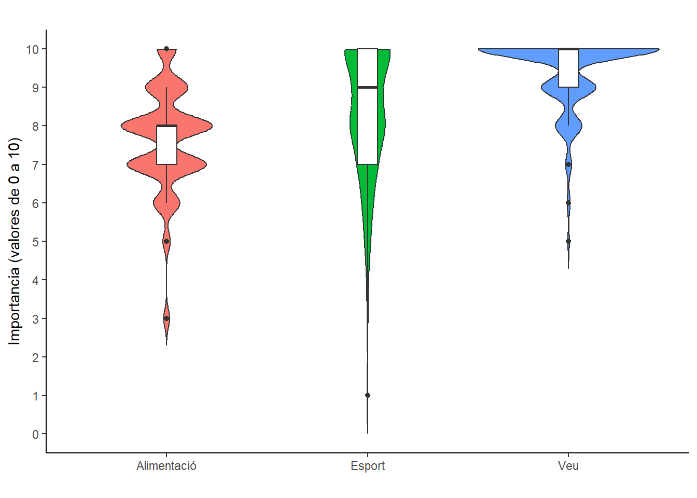
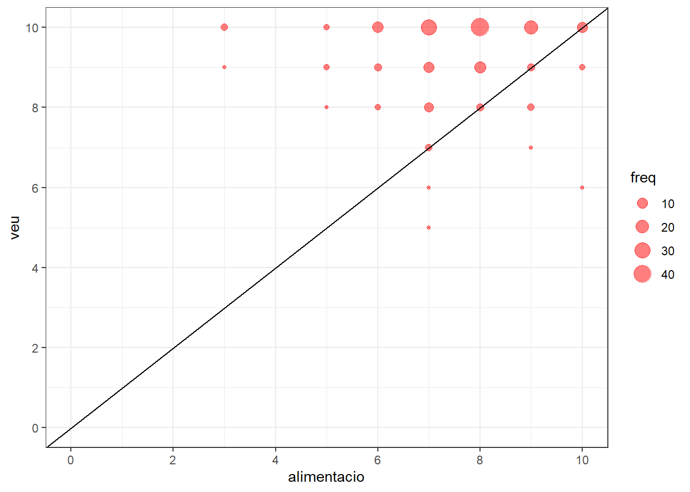
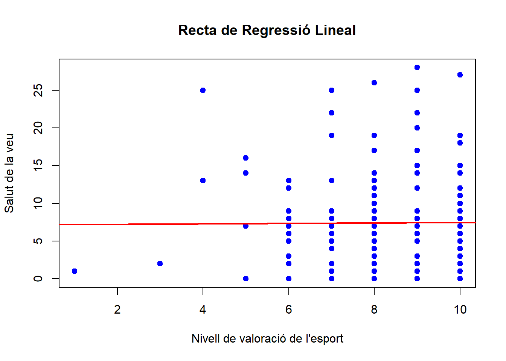

[1] "ID"
[2] "De l'1 al 10 quina importancia té la veu per a vostè?"
[3] "Sexe"
[4] "On fa feina?"
[5] "Cos docent"
[6] "Quina edat té?"
[7] "Practica esport o fa alguna activitat física?"
[8] "De l'1 al 10 quina importancia té la pràctica de l'esport o activitat física per a vostè?"
[9] "Té una bona qualitat del son?"
[10] "Consumeix cafè?"
[11] "Consumeix tabac?"
[12] "Consumeix alcohol?"
[13] "Consumeix begudes amb gas?"
[14] "De l'1 al 10 assenyali si segueix una dieta equilibrada i saludable."
[15] "Ha estat diagnosticat per un metge o metgessa d'alguna de les malalties següents?"
[16] "Si ha marcat alguna de les opcions anterior, especifiqui la patologia."
[17] "Ha estat diagnosticat per un especialista mèdic (otorinolaringòleg, foniatra) d'alguna lesió a les cordes vocals?"
[18] "Aquest mes ha tengut algún símptoma vocal dels següents?\r\nEs pot marcar més d'una opció"
[19] "L'han operat de les cordes vocals?"
[20] "Si té alguna alteració de la veu, recorda quin temps fa que va començar?"
[21] "En alguna ocasió, ha estat de baixa laboral per problemes de veu?"
[22] "Si la resposta a la pregunta anterior és afirmativa, indiqui la periodicitat (cada any, trimestre...) i la durada de la baixa més llarga i la malaltia"
[23] "Ha tengut problemes de veu importants i que li han dificultat la feina al llarg del curs 2022-2023?"
[24] "Té formació sobre salut vocal?"
[25] "Pren alguna o algunes de les medicacions següents?\r\nEs pot marcar més d'una opció"
[26] "Segueix una rutina d'higiene vocal?"
[27] "Fa alguna de les activitats següents? Es pot marcar més d'una opció"
[28] "La gent em sent amb dificultat a causa de la meva veu"
[29] "La gent no m'entén en llocs sorollosos"
[30] "Els meus problemes amb la veu alteren la meva vida personal i social"
[31] "Em sent desplaçat de les converses per la meva veu"
[32] "El meu problema amb la veu afecta el rendiment laboral"
[33] "Not que necessit tensar la gola (gargamella) per produir la veu"
[34] "La qualitat de la meva veu és imprevisible"
[35] "La meva veu em molesta"
[36] "La meva veu em fa sentir certa minusvalidesa"
[37] "La gent em pregunta: què et passa amb la veu?"
[38] "...38"
Començam fent una neteja de les dades. Bàsicament, afegim la columna score i eliminam les columnes on apareixen les respostes a les preguntes sobre salut vocal.
canvi_factors <-c("Mai"=0, "Gairebé mai"=1, "A vegades"=2, "Gairebé sempre"=3, "Sempre"=4) # Convert the factor to numeric by applying the mapping -->df <- raw %>%mutate(across(28:37, ~ canvi_factors[.]), .keep ="all") %>%mutate(score =rowSums(across(28:37))) %>%select(c(1:27, 39)) write_csv2(df, "data.csv")
##Pregunta a contestar La pregunta a contestar és “Els professors donen manco importància a la veu que a l’esport o l’alimentació?” Canviam el nom de les columnes que tenen la informació important per netedat del codi.
df_esp <- df %>%group_by(veu, esport) %>%summarise(freq =n())df_esp %>%ggplot(aes(x=esport, y = veu, size=freq)) +geom_point(alpha =0.5, color ="blue")+geom_abline(intercept =0, slope =1)+scale_x_continuous(limits =c(0, 10), breaks =seq(0, 10, by =2))+scale_y_continuous(limits =c(0, 10), breaks =seq(0, 10, by =2))+theme_bw()

df_ali <- df %>%group_by(veu, alimentacio) %>%summarise(freq =n())df_ali %>%ggplot(aes(x=alimentacio, y = veu, size=freq)) +geom_point(alpha =0.5, color ="red")+geom_abline(intercept =0, slope =1)+scale_x_continuous(limits =c(0, 10), breaks =seq(0, 10, by =2))+scale_y_continuous(limits =c(0, 10), breaks =seq(0, 10, by =2))+theme_bw()

Ens interessarà identificar les zones amb més tendència. Veim que en els dos casos, es dona més importància a la veu, però en el cas de l’alimentació és molt més notable.
Havent relacionat les dades i vist les tendències, ens interessa creuar dites dades amb l’score. Podríem veure si les persones amb respostes per sobre de les diagonals als gràfics anteriors (és a dir, donen més importància a la veu que a l’esport i alimentació) tenen menor score que les de sota (recordem, menor score implica major salut vocal).
Rows: 185
Columns: 27
$ id <fct> 1, 2, 3, 4, 5, 6, 7, 8, 9, 10, 11, 12, 13, 14…
$ importancia_voz <int> 10, 10, 10, 10, 10, 10, 9, 9, 10, 10, 9, 10, …
$ sexo <fct> Femení, Femení, Masculí, Femení, Femení, Feme…
$ lugar_trabajo <fct> "Palma, Llucmajor, Algaida, Santa Eugènia, Ma…
$ cuerpo_docente <fct> "Formació Professional", "Educació Secundària…
$ edad <fct> Entre 36 i 50, Entre 36 i 50, Entre 36 i 50, …
$ actividas_fisica <fct> Més de 150 min. per setmana, Més de 150 min. …
$ importancia_deporte <int> 10, 10, 10, 8, 10, 10, 10, 7, 10, 10, 7, 9, 7…
$ calidad_sueno <fct> Dorm bé i em despert descansat, Dorm bé però …
$ cafe <fct> Diàriament, Ocasionalment, Diàriament, Diària…
$ tabaco <fct> Diariament, No, No, Anteriorment (exfumador),…
$ alcohol <fct> Ocasionalment, Ocasionalment, Setmanalment, S…
$ bebida_gas <fct> Mai, Ocasionalment, Diàriament, Ocasionalment…
$ dieta_saludable <int> 8, 6, 9, 6, 10, 10, 8, 8, 8, 8, 9, 9, 8, 7, 7…
$ diagnostico <fct> "Cap de les esmentades anteriorment", "Cap de…
$ patologia <fct> "", "", "", "", "Asma, al·lergia", "", "", ""…
$ diagnostico_especialista <fct> No, Si, No, Si, No, Si, No, No, Si, No, No, N…
$ sintomas <fct> "Mucositat", "Fatiga vocal", "Veu ronca, esca…
$ operacion <fct> No, No, No, No, No, No, No, No, Si, No, No, N…
$ tiempo_alteracion <fct> No tenc cap alteració de la veu., Va començar…
$ baja_voz <fct> "No, mai he estat de baixa per un problema de…
$ baja_larga <fct> "", "El curs escolar passat. Una setmana senc…
$ problema_curso22_23 <fct> No, Si, Si, No, Si, Si, Si, No, No, No, No, N…
$ formacion_voz <fct> "Si, vaig fer un curs fa temps", "No, mai he …
$ medicacion <fct> "Aspirina i antiinflamatoris no esteroideus",…
$ higiene_vocal <fct> "No seguesc cap rutina per a la veu", "No seg…
$ actividades <fct> "No faig cap activitat amb exigència vocal ex…
data_long <- data %>%pivot_longer(cols =c(importancia_voz, importancia_deporte, dieta_saludable),names_to ="categoria",values_to ="valor")ggplot(data_long, aes(x=categoria, y=valor, fill=categoria)) +geom_violin(trim=FALSE)+geom_boxplot(width=0.1, fill="white")+labs(title="",x="", y ="Importancia (valores de 0 a 10)") +theme_classic() +theme(legend.position="none",plot.title =element_text(size=11) ) +scale_x_discrete(labels =c("dieta_saludable"="Alimentación", "importancia_deporte"="Deporte", "importancia_voz"="Voz")) +scale_y_continuous(limits=c(0,10),breaks =seq(0, 10, 1))
summary(data_long$valor ~data$importancia_voz)
Length Class Mode
3 formula call
Aplicarem un test ANOVA per blocs, on cada una de les persones representa un bloc, i els tractaments són donar importància a l’alimentació, a l’esport, o a la veu.
Intuïtivament podem pensar que sí hi ha interacció entre blocs i tractaments: la diferència entre importància donada a alimentació i veu pot variar molt entre els individus
#Feim df per aplicar anova per blocsdf_anova = data %>%select(1, 2, 8, 14)df_anova = df_anova %>%pivot_longer(cols =c(importancia_voz, importancia_deporte, dieta_saludable), names_to="Tractament", values_to ="nota")friedman.test(nota~Tractament|id,data=df_anova)
Friedman rank sum test
data: nota and Tractament and id
Friedman chi-squared = 158.43, df = 2, p-value < 2.2e-16
Concloem que en mitjana no es dona la mateixa importància a esport, veu i alimentació.
Pairwise comparisons using Wilcoxon signed rank test with continuity correction
data: df_anova$nota and df_anova$Tractament
dieta_saludable importancia_deporte
importancia_deporte 3.0e-07 -
importancia_voz < 2e-16 1.1e-12
P value adjustment method: holm
En mitjana es dona una importància diferent a cada un dels tres aspectes.
(Voleu borrar això?)
Relació amb l’Score
Un cop hem relacionat el nivell d’imporància que li donen els professors a la veu, amb la que li donen a l’esport i a l’alimentació respectivament, anem a comparar com tenen la veu cada un d’aquests perfils.
Clarament, les dades de nivell de valoració de l’esport i l’alimentació amb la salut de la veu, no tenen depèndència entre elles, en canvi, si envers de la salut de la veu, ho comparam amb la importància que li donen a la veu.
A part d’això, si ens interessa quantificar la relació entre les variables i predir com canvia la salut de la veu a mesura que canvia la valoració de l’esport i l’alimentació respectivament, podem ajustar un model de regressió lineal.
model <-lm(df$score ~ df$esport, data = df)summary(model)
Call:
lm(formula = df$score ~ df$esport, data = df)
Residuals:
Min 1Q Median 3Q Max
-7.464 -5.406 -1.406 3.594 20.565
Coefficients:
Estimate Std. Error t value Pr(>|t|)
(Intercept) 7.17737 2.47414 2.901 0.00418 **
df$esport 0.02862 0.29084 0.098 0.92172
---
Signif. codes: 0 '***' 0.001 '**' 0.01 '*' 0.05 '.' 0.1 ' ' 1
Residual standard error: 6.515 on 183 degrees of freedom
Multiple R-squared: 5.29e-05, Adjusted R-squared: -0.005411
F-statistic: 0.009682 on 1 and 183 DF, p-value: 0.9217
x <-plot(df$score~df$esport, main ="Recta de Regressió Lineal", xlab ="Nivell de valoració de l'esport", ylab ="Salut de la veu",col="blue", pch =19)+abline(model, col ="red", lwd =2)

Dependents o independents?
Seria interessant veure si les el nivell d’importància que li donen a l’esport (resp. amb l’alimentació) i el nivell d’importància que li donen a la veu, són dependents o no.
Farem un test d’independència entre aquestes variables. Calcularem les freqüències esperades d’ambdues observacions, i veiem si es cumpleix la condició necessària de que els valors siguin majors que 5.
taula_esport=addmargins(table(df$esport,df$veu))taula_alimentacio=addmargins(table(df$alimentacio,df$veu))#Ara extreurem les frequ marginals de les filesfreq_abs_esport_f=taula_esport[-dim(taula_esport)[1],"Sum"]freq_abs_alimentacio_f=taula_alimentacio[-dim(taula_alimentacio)[1],"Sum"]#També ho farem de les columnesfreq_abs_esport_c=taula_esport["Sum",-dim(taula_esport)[2]]#(Siran igual amb l'alimentació)#Ara calcularem la taula de freqüències esperadesfreq_esperades_esport=freq_abs_esport_f%*%t(freq_abs_esport_c)/length(df$esport)freq_esperades_alimentacio=freq_abs_alimentacio_f%*%t(freq_abs_esport_c)/length(df$alimentacio)freq_esperades_esport